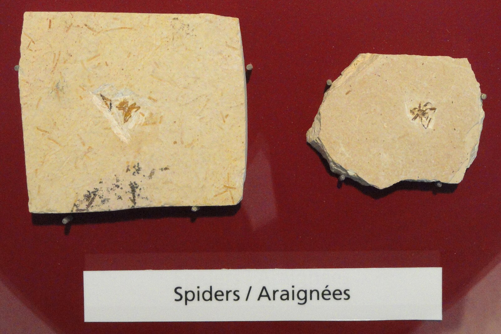

What are Arachnids
Arachnids are a diverse class of joint-legged invertebrates that belong to the arthropod phylum. They are characterized by their segmented bodies, chitinous exoskeletons, and four pairs of legs. One of their most distinctive features is the presence of two main body parts: the cephalothorax, which fuses the head and thorax, and the abdomen. Arachnids encompass a wide range of species, including spiders, scorpions, ticks, mites, and harvestmen (commonly known as daddy longlegs). Most arachnids are predatory, using venomous fangs or other specialized structures to capture and immobilize their prey. They play essential roles in various ecosystems, serving as both predators and scavengers. Arachnids have adapted to diverse habitats, from deserts to forests to underwater environments, making them a fascinating and ecologically significant group within the animal kingdom.
Evolutionary History
The evolutionary history of arachnids stretches back hundreds of millions of years, with their ancestors likely emerging during the Silurian period, around 420 million years ago. Arachnids belong to the subphylum Chelicerata, which is one of the oldest arthropod groups. Their closest relatives are the sea spiders (Pycnogonida), and together they form the class Arachnomorpha. Arachnids have undergone various adaptations to survive in different environments, such as the colonization of terrestrial habitats and the transition to life on land. Fossil records reveal the gradual development of respiratory and sensory structures, which allowed them to thrive outside of water. The evolutionary history of arachnids showcases their remarkable capacity to diversify and succeed in a multitude of habitats, making them a fascinating subject of study for biologists and paleontologists.